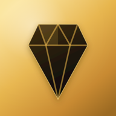

نفيس
Nafis
سعر الذهب والفضة والدولار في بلدك Gold, silver and the dollar at your local price
مجاني · بدون إعلانات · يشتغل بدون إنترنت
سياسة الخصوصية · Privacy

Nafis
سعر الذهب والفضة والدولار في بلدك Gold, silver and the dollar at your local price
مجاني · بدون إعلانات · يشتغل بدون إنترنت
سياسة الخصوصية · Privacy